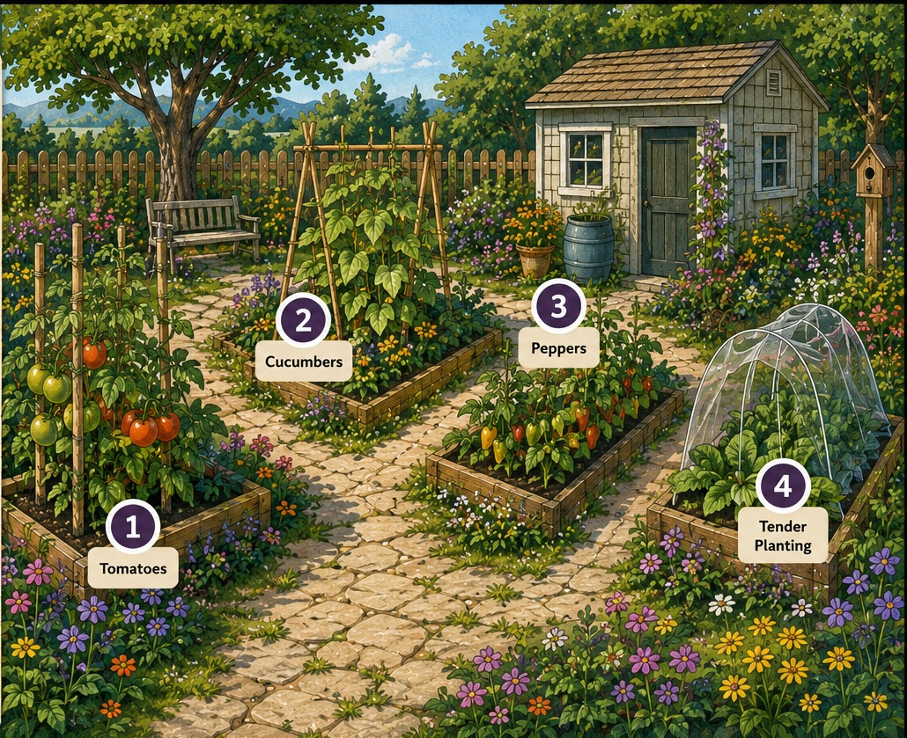
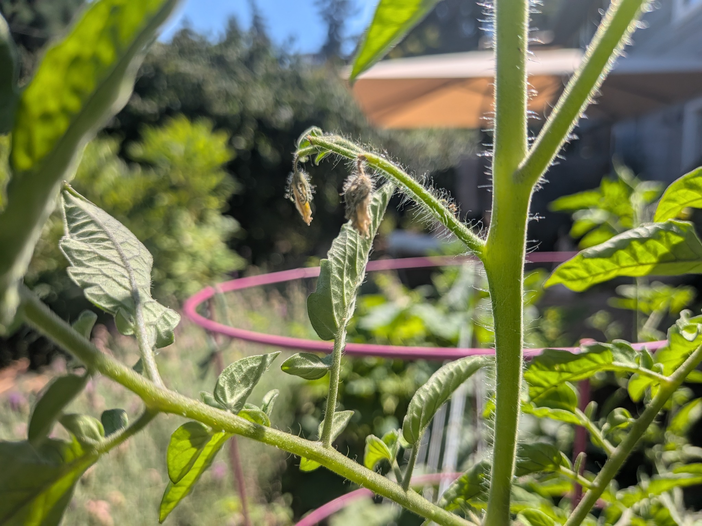
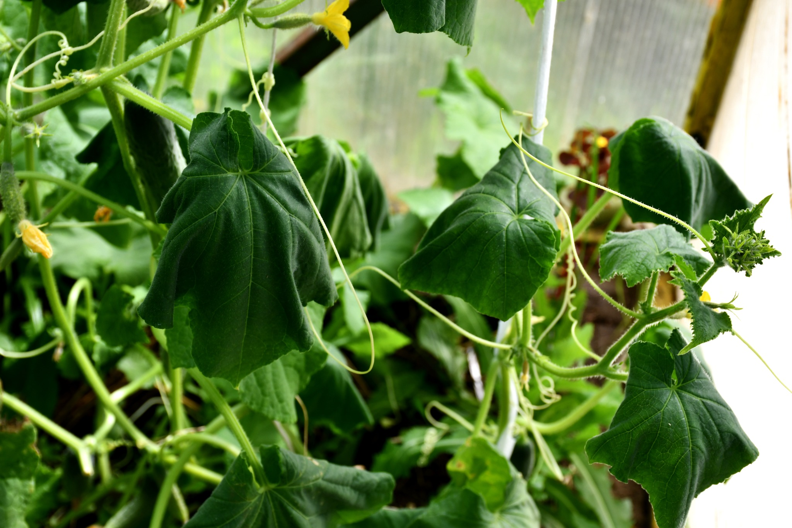
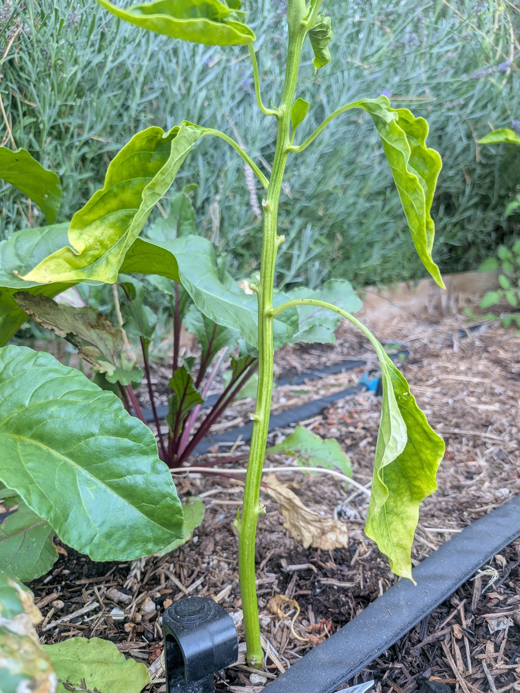
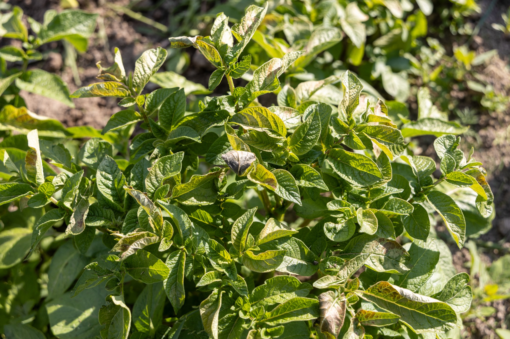

What is stressing this plant?Module 3 · Garden walk
LOOK + CONNECT
A GARDEN WALK
Something looks different in the garden.
Plants give us clues. Weather data can help us make sense of what we see.
At each stop, you will:
1👁
Look at the plant and notice what has changed.
2☀️
Check the recent weather clues.
3?
Weigh the evidence and choose the best-supported explanation.
GARDEN MAP
Follow the path through the garden.
Return here after each plant. Return here after each plant. The next garden stop will become available.

Stop 1 is ready. Select the tomatoes to begin.
STOP 1 OF 4 · Tomatoes

Photo: Berit Dinsdale, Oregon State University
WEIGH THE EVIDENCE
Which explanation best connects the plant response with the conditions shown?
STOP 2 OF 4 · Cucumber

Photo: Olga Seyfutdinova/stock.adobe.com · Adobe Stock 517376856
WEIGH THE EVIDENCE
Why might this plant wilt during the afternoon?
STOP 3 OF 4 · Pepper

Photo: Berit Dinsdale, Oregon State University
WEIGH THE EVIDENCE
Which explanation best accounts for the plant symptoms and the weather data?
STOP 4 OF 4 · Tender growth

Photo: Olga Seyfutdinova/stock.adobe.com · Adobe Stock 762546862
WEIGH THE EVIDENCE
Which clues provide the strongest evidence for what may have happened?
GARDEN WALK COMPLETE
Conclusion
The plant is a clue—not the whole picture.
Temperature, precipitation, and extreme weather can stress plants in different ways. Looking at plant symptoms + weather conditions gives us more information than appearance alone.
Weather tells us what conditions the plant experienced. Climate helps us understand how those conditions may be changing over time.
You’ve practiced connecting plant responses with weather and climate conditions. Next, we’ll consider what gardeners can do to help plants cope with those conditions.